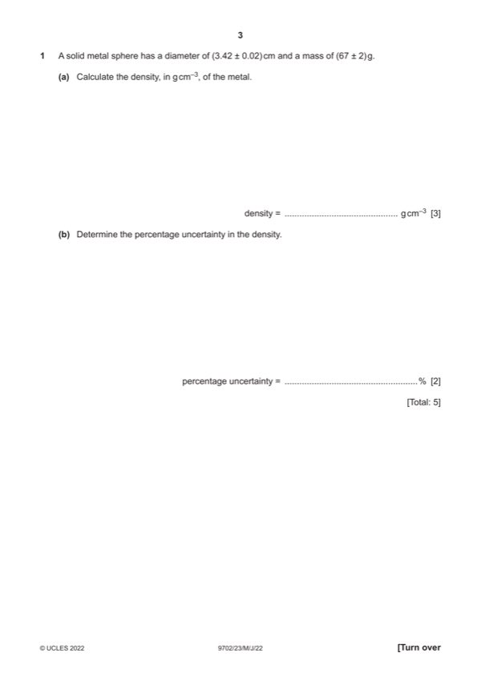
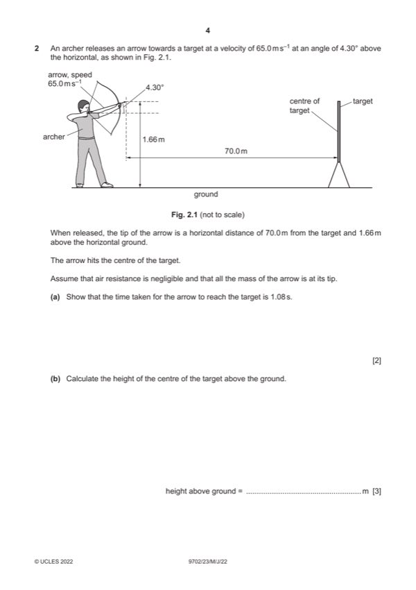
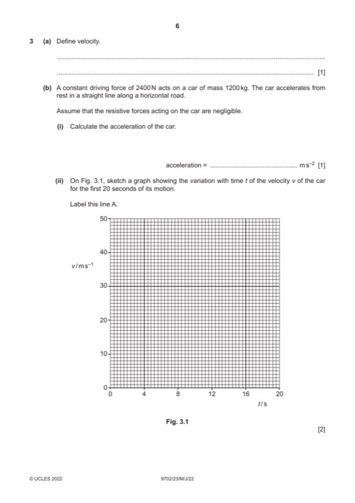
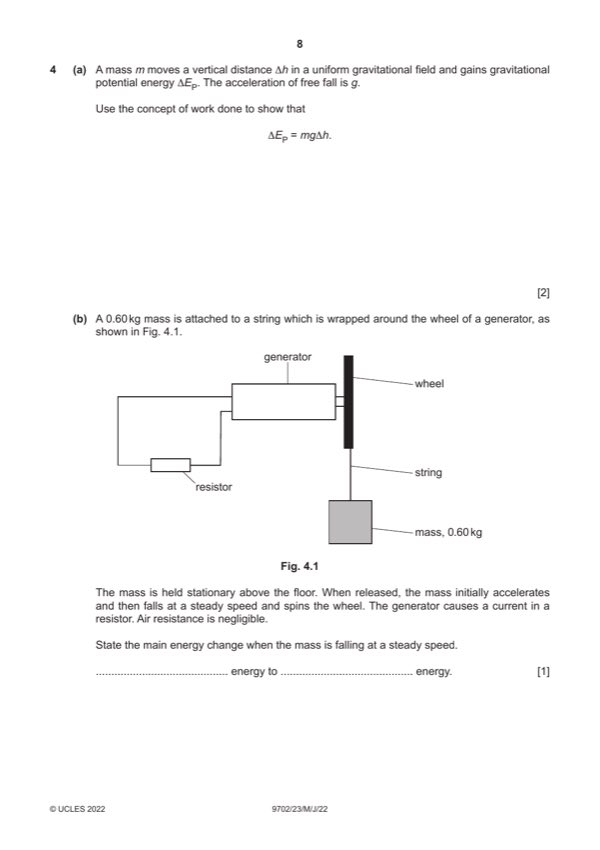
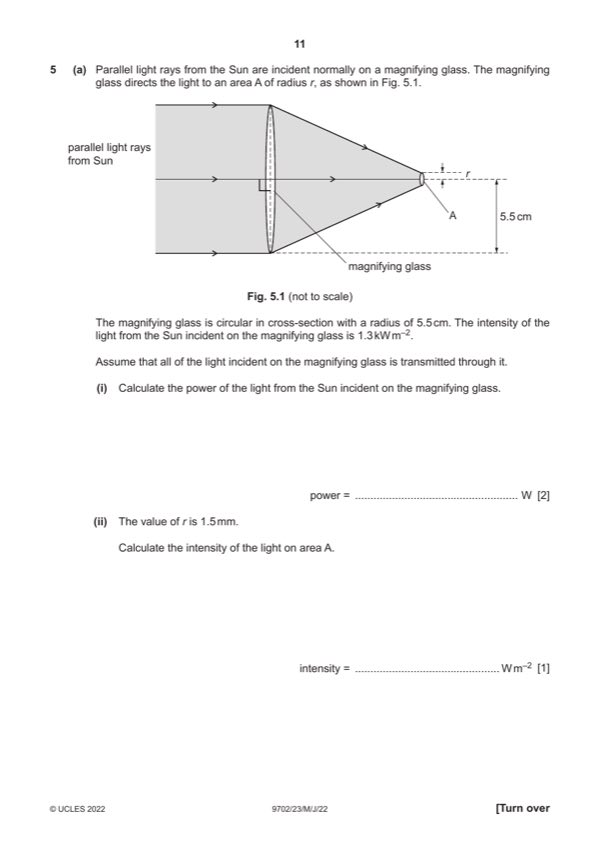
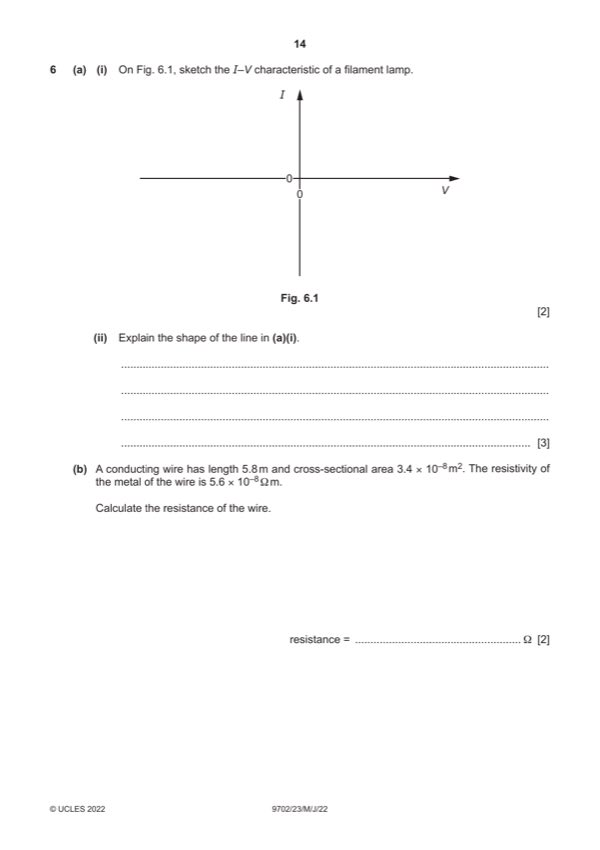
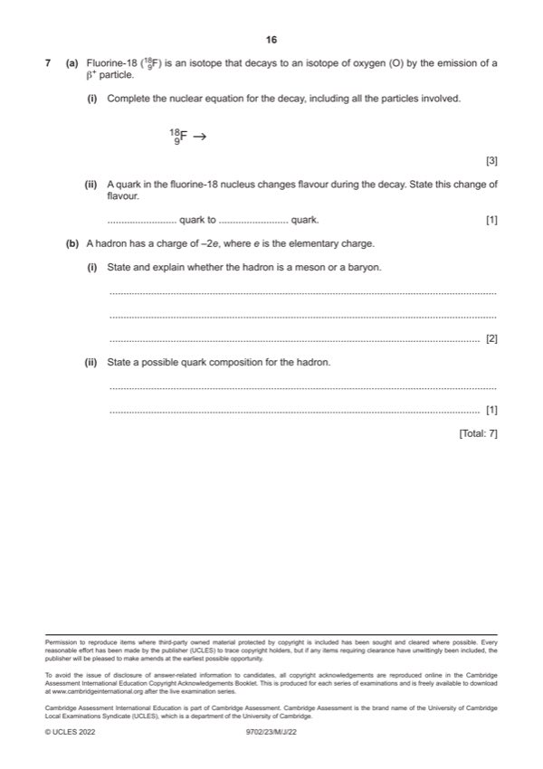

Question 1

Original paper page 3
Part 1(a) — solution
- [A1] Obtain/use: = 67 / 20.9
Mark points
- [A1] Obtain/use: = 67 / 20.9
Part 1(b) — solution
- [A1] Obtain/use: = 3.0% + 3 0.58%
Mark points
- [A1] Obtain/use: = 3.0% + 3 0.58%
Step-by-step solutions based on the mark scheme (not a mark-scheme dump).

Part 1(a) — solution
Part 1(b) — solution

Part 2(a) — solution
Part 2(b) — solution
Part 2(c) — solution

Part 3(a) — solution
Part 3(b)(i) — solution
Part 3(b)(ii) — solution
Part 3(c)(i) — solution
Part 3(c)(ii) — solution

Part 4(a) — solution
Part 4(b) — solution
Part 4(c)(i) — solution
Part 4(c)(ii) — solution
Part 4(c)(iii) — solution

Part 5(a)(i) — solution
Part 5(a)(ii) — solution
Part 5(b)(i) — solution
Part 5(b)(ii) — solution
Part 5(b)(iii) — solution
Part 5(b)(iv) — solution

Part 6(a)(i) — solution
Part 6(a)(ii) — solution
Part 6(b) — solution
Part 6(c) — solution
Answer: B4

Part 7(a)(i) — solution
Answer: 18
Part 7(a)(ii) — solution
Part 7(b)(i) — solution
Part 7(b)(ii) — solution